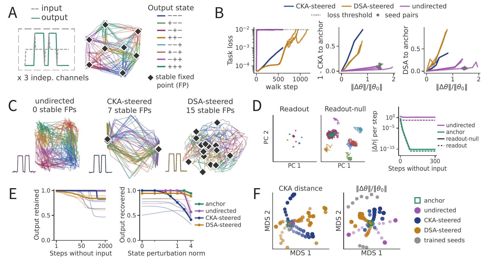
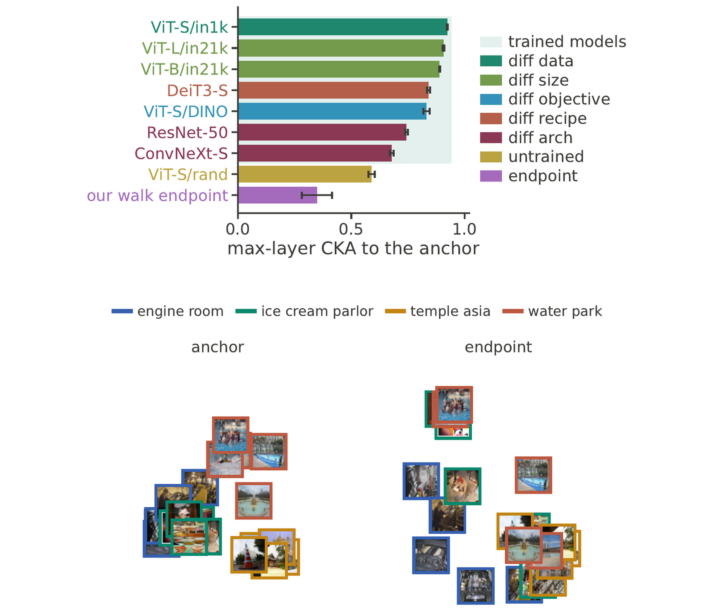
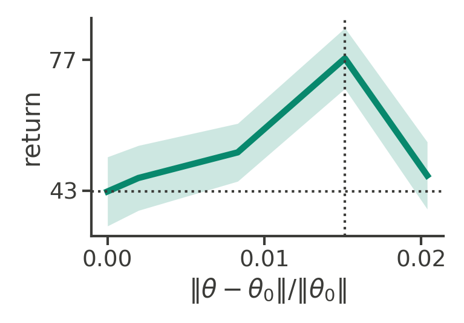
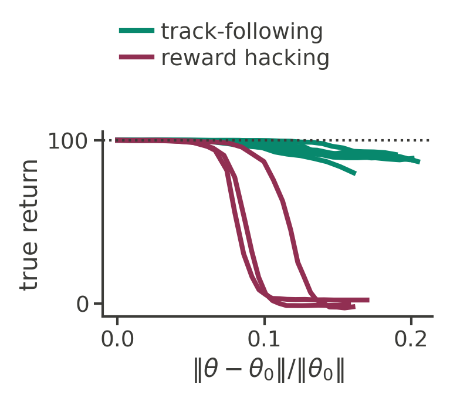
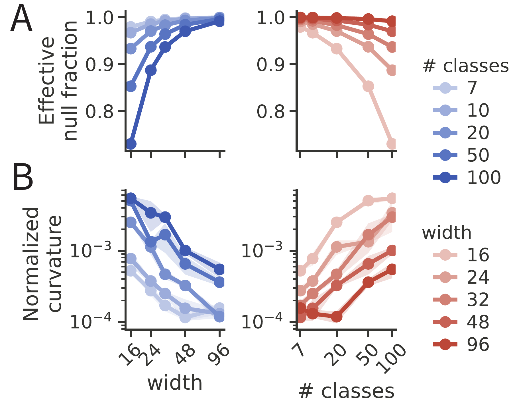

On a single task, deep neural networks can learn a wide range of solutions, depending on their optimizer, training data, architecture, and hyperparameters. Many of these solutions are surprisingly mode-connected: rather than isolated points in the weight space, they are connected by low loss regions. Despite this observation, the diversity of solutions in terms of their internal computation in these regions has not been characterized. A parallel line of work has identified the degeneracy of neural representations: many neural network solutions exist with similar training loss yet distinct internal structures. However, it is unclear how these diverse solutions are related in weight space. Here, we unify these subfields and demonstrate for the first time that there exist many different internal mechanisms within a local mode connected region in weight space. To do so, we introduce Hessian Null Space Continuation (HNC), a scalable method that uses local curvature information to traverse regions of weight space that preserve network function. HNC can additionally be steered toward solutions with specified properties.
In RNNs trained on a memory task, HNC drives the networks to learn drastically different representations and dynamics, even with maintained behavior. In ImageNet-trained Vision Transformers, HNC finds alternative representations which differ more from the original network than any independently trained models of different architectures and training objectives. In reinforcement-learning agents, HNC uncovers a distinct behavioral strategy at comparable return in a navigation task, and exposes a reward-hacking strategy in an AI Safety Gridworld environment. Finally, HNC provides local geometric information about the solution distribution, showing how model size and task complexity shape its dimension and functional sensitivity. Together, our results show that a surprisingly large amount of representational diversity exists near a single trained solution, which is unseen by standard gradient-based optimization techniques. Our domain-agnostic method, HNC, can identify and quantify this diversity, opening new possibilities for mechanistic understanding of solution spaces and providing a principled basis for model merging, editing, and fine-tuning.
HNC keeps a function-matching loss, the mean squared difference between the alternative network's outputs and the anchor's on a set of probe inputs. To find the null space, HNC computes the Hessian of this loss with respect to the weights and takes the directions with the smallest eigenvalues, the flattest directions. Each iteration of HNC has three parts:
For the flat step, the direction of the step can be chosen randomly from the null space. It can additionally be steered to optimize an objective, such as the representational distance to the anchor, by following its gradient projected onto the null space.
RNNs · 3-bit flip-flop memory task
Every walk keeps the task loss below 0.01. Walks steered on representational (CKA) or dynamical (DSA) distance reach much larger distances from the anchor than independently trained networks, with less weight movement. The anchor stores its eight memories as stable fixed points at the corners of a cube; along the walks these fixed points split, multiply, or disappear, and one undirected network keeps all eight memories while its hidden state never stops moving.

HNC walks from RNNs trained on a memory task. The task and the anchor's solution (A), what the walks cost and what they change (B), where they end up (C), how the undirected network holds memories without fixed points (D), memory and robustness beyond the trained conditions (E), and maps of the networks reached (F).
ViT-S/16 · ImageNet classification
Steered to lower the highest CKA between any layer of the walked network and any layer of the pretrained anchor, while keeping the anchor's predictions on the probe images, HNC reaches representations that differ more from the anchor than those of seven independently trained models of other architectures and objectives. ImageNet top-1 accuracy drops by less than one point, and the similarity structure among the images reorganizes.

Representational freedom in a Vision Transformer. Similarity to the anchor falls along the walk on both probe and held-out images (A) while predictions are kept (B), ending below the similarity of other trained models (C); the similarity structure among images reorganizes (D-F).
RL agents · plume tracking & AI Safety Gridworld
For RL agents, HNC preserves an importance-sampled estimate of the return on a buffer that is re-collected along the walk, and steers the actions away from the anchor's. A plume-tracking agent learns to follow the edge of the odor plume instead of surging into it and casting across the wind, at comparable return. In the boat race, walks from agents trained on the intended objective uncover a policy that keeps the proxy reward by stepping on and off one arrow tile.

Same goal, different search strategy. Left: in three trials, the anchor and the HNC alternative start from the same point (dark dot) in the same moving odor plume, and both reach the source. The anchor zigzags across the wind whenever it loses the odor. The alternative glides in along the edge of the plume. Right: the return along the walk stays at or above the anchor's (dotted horizontal line), and the dotted vertical line marks the policy in the video. The rise in return comes from starting points that the anchor fails and the alternative solves. Band: standard error over 60 starting points.

Same proxy reward, different behavior. Left: an anchor trained on the true return circles the track, while the endpoint of its HNC walk steps on and off one arrow tile. Both collect the same proxy return, but only the anchor earns true return. Right: true return along the walks from ten anchors. Each walk holds the proxy return and steers only the actions away from the anchor's, so it never sees the true return. Three of the ten walks end in reward hacking. Every walk keeps the proxy return at 40 or more of the anchor's 50. Dotted line: the anchor's true return.
CNNs · CIFAR-100 subsets of varying difficulty
The Hessian at the anchor and the curvature along the walk measure the solution set from a single trained network. The fraction of flat directions grows with width and shrinks as the task gets harder, and the directions HNC follows become more sensitive to weight changes on harder tasks.

Model size and task difficulty shape flatness and curvature. Effective null fraction (A) and curvature along the walk (B) across network widths and numbers of image classes.
@article{huang2026hnc,
title = {Traversing the solution space of neural networks with Hessian Null Space Continuation},
author = {Huang, Ann and Ostrow, Mitchell and Lu, Zhouyang and Redman, Will and Kozachkov, Leo and Rajan, Kanaka},
year = {2026}
}